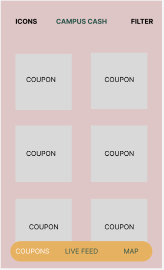
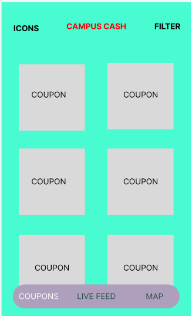

Color Study
I undertook the task of analyzing the color scheme of a specific UI: the Campus Cash app, designed to provide students with coupon offers. My initial step involved recreating the UI, preserving its original color palette to clearly highlight the functionality associated with each hue. My goal was to enhance the effectiveness of the design by consolidating more content within a singular screen size. Following this, I crafted three additional versions, each with a unique color scheme. The most demanding aspect of this exercise was striving for a balance between aesthetic appeal and clear distinction between interface elements. Concluding the project, I performed a detailed analysis of each proposed color arrangement. Below are the results of this exercise.
This is a page from the Campus Cash app, which is an app with coupons for students.

The app’s theme is monochromatic. It uses different shades of green. The blend of green shades imparts a harmonious feel, as the hues complement one another and aid in distinguishing between different elements. Because of its monochromatic theme, the app might pose accessibility challenges. Monochromatic color schemes, while aesthetically appealing, can sometimes lead to insufficient contrast between different design elements. Users with visual impairments, especially those with color vision deficiencies, might find it difficult to distinguish between various parts of the interface. This can impact not only the readability of the text but also the user's ability to identify actionable items. I believe the designers were trying to make a simple app that is intuitive and straight forward for college students. The decision to use green might have multiple reasons behind it; green often symbolizes growth, and renewal. It can also be associated with financial wellness or eco-friendliness, which fits with the purpose of the app.
This iteration of the UI employs a near split-complementary color scheme, featuring a red-purple hue (resulting in a pinkish tone), orange, and green. The UI boasts a calming pastel backdrop, setting a welcoming atmosphere. Dominating this is the orange app bar, infusing the design with enthusiasm. Orange's liveliness keeps users engaged amidst the soothing background. The dark pine green logo anchors the interface, conveying stability and depth. Its richness contrasts with the energetic orange, ensuring balance. Strategically, the logo foregrounds the brand's reliability. Together, the colors harmonize tranquility with dynamism, crafting a refreshing yet grounded design.

Although the this redesigned UI does not fit into a harmonious combination, it features a serene pastel blue app bar, exuding calm and clarity. This shade fosters a user-friendly ambiance. Contrasting this is the dark tan, lending an earthy, stable foundation to the interface. Its neutrality anchors the design without overwhelming. The bright orange logo stands out, adding a splash of vitality and enthusiasm. Collectively, this palette melds soft sophistication with energetic vibrancy, crafting an inviting design.
This iteration of the UI closely aligns with a split-complementary color scheme, incorporating shades of blue-green, blue-purple, and red-orange. The bright blue-green background offers a refreshing and invigorating base, capturing attention and evoking feelings of growth and creativity. This vibrancy likely resonates with the energetic nature of college students. The bluish-purple app bar contrasts beautifully, serving as a calming and sophisticated anchor amidst the brightness. Purple's mix of red and blue hints at both passion and serenity. The dark red-orange logo introduces warmth and enthusiasm to the design. Together, these colors breathe fresh life into the app, creating a modern and engaging interface.
I believe the first iteration is the most effective because it seamlessly integrates visual appeal with user-centric design. While its distinct color palette captures attention, it also ensures that navigating through the app remains intuitive. The design's emotional resonance, from the calming pastel to the invigorating orange, enhances user engagement. Moreover, the clearly defined elements, like the standout app bar and the anchoring logo, prioritize user comfort and fluid interaction. In essence, this iteration goes beyond mere aesthetics to offer an experience that's both delightful and functional for the intended audience. My definition of "effective" in the context of UI design hinges on two primary factors. First, there must be sufficient contrast between elements, ensuring that users can effortlessly distinguish and navigate the interface's various components. Such contrast not only promotes accessibility but also enhances user experience by minimizing confusion or potential missteps. Second, the design must possess aesthetic appeal, resonating with the target audience and fostering a positive emotional connection. An aesthetically pleasing design can significantly elevate user engagement and overall satisfaction.